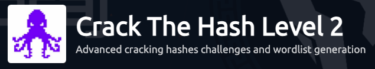
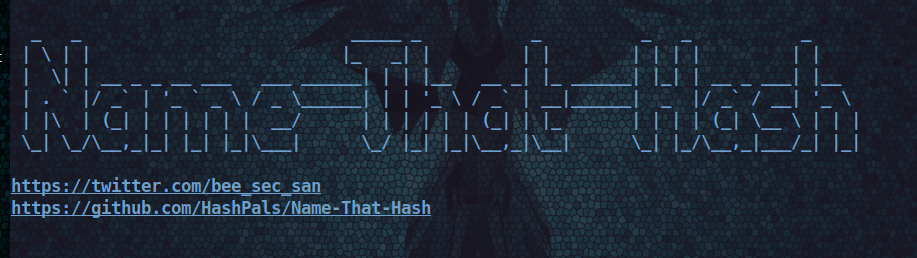

Advanced cracking of hashes and wordlist generation.

The link to this room for level 2 Crack the Hash is here.
Task 2.1
Need to install Haiti with the install guide.
- If on Kali or Parrot, you can just use
sudo gem install haiti-hash - then type
haiti -hfor the help page
haiti samples ref name: haiti samples hashcat sha1
Task 2.2
- hash:
741ebf5166b9ece4cca88a3868c44871e8370707cf19af3ceaa4a6fba006f224ae03f39153492853 - I tried putting in the 3 types it just printed but did not get the answer, read the documentation and saw the second best program is called Name-That-Hash.
So I also installed Name-That-Hash, seeing that it is recently updated and well liked.

pip3 install name-that-hash- then type:
nth --text '<the hash>'
Just running the command once, and trying the 1st printed hash type, I got the answer correct.
Task 2.3
- hash:
1aec7a56aa08b25b596057e1ccbcb6d768b770eaa0f355ccbd56aee5040e02ee
When I run the command in Haiti haiti -e <hash> I get a long list of what it could be, SHA-256 all the way to Umbraco HMAC-SHA1. I choose to ignore trying all of these.
So I try with Name-That-Hash, and get nicely printed Most Likely and Least Likely categories of the hash types. One of the most likely is the name for the next question, so far off to a great start.
We get SHA256, KECCAK-256, HAVEL-128 AND Snefru-256 as most likely to the solution.
- Note: this task does not need an answer
Task 2.4
Question: What is Keccak-256 Hashcat code?
Using the output from Task 2.3 we can answer this question, the answer is of length 5, so it requires only values.
Task 2.5
Question: What is Keccak-256 John the Ripper code?
Having previous run the hash with the long list of hash types, the Keccak-256 is near the top, in pink brackets is “JtR:” which holds the answer.
Task 3.1
For hash cracking you will often need some custom or specialized dictionaries called wordlists.
SecLists is a collection of multiple types of lists used during security assessments, collected in one place. List types include usernames, passwords, URLs, sensitive data patterns, fuzzing payloads, web shells, and many more. SecLists is created by OWASP GitHub link
wordlistctl is a script to fetch, install, update and search wordlist archives from websites offering wordlists with more than 6300 wordlists available. GitHub link. If using the AttackBox VM it will have this wordlist (when I opened the AttackBox it did not have it).
- to install on your VM
git clone <link> python3 wordlistctl/wordlistctl -v- The Documentation shows syntax:
wordlistctl {fetch, search, list}
- to install on your VM
RockYou is a famous wordlist contains a large set of commonly used password sorted by frequency. To search for this wordlist with wordlistclt run:
python3 wordlistctl/wordlistctl.py search rockyou
Task 3.2
Question: Which option do you need to add to the previous command to search into local archives instead of remote ones?
To answer this question you need to go to the GitHub README page, it will show what flag you need to print the local wordlist for rockyou. But if you read ahead on the page will see the answer shown.
Task 3.3
We are instructed to download and install a wordlist
wordlistctl fetch -l rockyou- no answer needed
Task 3.4
You are asked to run the commands again searching for local rockyou file. When you download a wordlist it is in a .tar.gz but running gunzip can unzip the file and then you will have .txt. The path of where the file for wordlists is the same, /usr/share/wordlists/passwords/rockyou.txt.
Task 3.5
You can search for a wordlist about a specific subject (eg. facebook) wordlistctl search facebook or list all wordlists from a category (eg. fuzzing) wordlistctl list -g fuzzing.
python3 wordlistctl/wordlistctl list -g usernames
I made the mistake of downloading usernames which took a big chunk of my VM disk usage, so be careful with what you run.
Task 4.1
The most common hash cracking tools are Hashcat and John the Ripper.
Modes of cracking:
wordlist= a long list of common words like a dictionary for passwordsincremental mode= trying all possible character combinations as passwords (powerful but longer run time, especially if password is long)rule mode= uses wodlist mode with a character/ string pattern
Rule based bruteforce attacks:
- generating a custom wordlist and using the standard wordlist mode iwth it
- using a common wordlist with a custom rules. This saves time iterating over thousands of lines of possible passwords. Using a custom wordlist can be applied for multiple cracking uses.
I changed the order of instructions from the room as this process makes more sense to install SecList then talk about John the Ripper.
We are instructed to install a SecList wordlist from GitHub. Then use the top 10,000 password list.
- if on Kali linux, install
sudo apt -y install seclists - the path for passwords:
/usr/share/seclists/Passwords/Common-Credentials/10k-most-common.txt
John the Ripper has syntax for using a wordlist with rules.
- locate where John the Ripper is on your machine, for me it is
/usr/share/john sudo touch john-local.conf
insert:
[List.Rules:THM01]
$[0-9]$[0-9]- there is a file
john.confand need to run this file,john john.confthen quit
Now the hash we need to crack.
- hash:
2d5c517a4f7a14dcb38329d228a7d18a3b78ce83 - hash type: SHA1
Put the hash into a text file, specify the hash type, the wordlist and our rule name.
- i named my file
riphash.txt john riphash.txt --format=raw-sha1 --wordlist=/usr/share/seclists/Passwords/Common-Credentials/10k-most-common.txt --rules=THM01
Wow, that was SUPER fast to crack such a simple password.
Task 5.1
Sometimes making a custom wordlist makes more sense as it can be used for multiple tools, but in other cases a wordlist is the better choice. Wordlists are best suited for passwords you know are around a specific topic like dogs, then you would use a wordlist for dogs.
this part I skipped installing Mentalist GitHub link to generate a wordlist. No answer is required.
Task 5.2
- hash:
ed91365105bba79fdab20c376d83d752 - hash type: md5
I used hashes.com and pasted in the hash instead of messing with the the previous section dog wordlist and mentalist app. It found the answer as it is a md5 hash.
Task 5.3
Now we have new tool to use, called CeWL Custom Word List generator that generates a wordlist from a website which is helpful for topic specific passwords.
- install via
git clone <link> sudo gem install bundler,bundle installI got a warning- changed permissions for
cewl.rbas shownchmod u+x ./cewl.rb - navigate to cewl/ and run
cewl --h - no answer required
Task 5.4
We are given a website to point teh cewl program to crawl and a depth of 2 links.
cewl -d 2 -w $(pwd)/example.txt https://example.org- Note that this makes example.txt file in the
pwdwhich is where the answer can be found
Task 5.5
Another tool to install from GitHub is TTPassGen which is a scriptable password dictionary generator.
- (Python 3)
pip install ttpassgen - Kali linux has it installed
With TTPassGen we can craft wordlists from scratch. Create a first wordlist containing all 4 digits PIN code value.
ttpassgen --rule '[?d]{4:4:*}' pin.txt- no answer required
Task 5.6
Generate a list of all lowercase chars combinations of length 1 to 3.
ttpassgen --rule '[?l]{1:3:*}' abc.txt- no answer required
Task 5.7
Then we can create a new wordlist that is a combination of several wordlists. Eg. combine the PIN wordlist and the letter wordlist separated by a dash.
- Warning: combining wordlists makes huge file sizes.
ttpassgen --dictlist 'pin.txt,abc.txt' --rule '$0[-]{1}$1' combination.tx - I did not make this wordlist
- no answer required
Task 5.8
Crack this md5 hash with combinations.txt.
- hash:
e5b47b7e8df2597077e703c76ee86aee
I instead used hashes.com and cracked the hash.
Task 6
You will have to crack several hashes. For each hash you will be given a short scenario that will help you to create a mangling rules, build a wordlist or finding some specialized data you’ll need to crack the hash.
The scenarios are located on the website: Password advisor (AttackBox VM), each piece of advice matches one of the following hashes (in the same order).
Task 6.1
- Advice n°1
- hash:
b16f211a8ad7f97778e5006c7cecdf31 - hint: English male name, md5, border mutation, custom rule
I went to hashes.com and pasted it in and got the answer.
work through
But the hint tells us to use wordlistctl dictionary that has names.
cd wordlistctl/in another terminal tab, I copied the hash into
name-that-hash, it says it is md5nano hash.txtand paste the hashsearch -l usernamesshows what usernames you have on your machinelist usernames
python3 wordlistctl list -g usernamesand findmalenames-usa-top1000warning: this command downloads all usernames files
fetch femalenames-use-top1000 -g usernames -l usernames. I stopped the download after a few seconds and deleted usernames files I did not want to save space.
So we now have male and female usernames.
Now we need to make a John the Ripper rule. Need to make a new rule sudo nano john-local.conf or john.conf and type:
[List.Rules:CTH01]
[0–9!@\#\$%^&()_+\-={}|\[\]\\;’:,/\<\>?`~*]This code is from Phantom-95 walkthrough and is helpful showing how to add a real custom rule.
john hash.txt --format=raw-md5 --wordlist=/usr/share/wordlists/usernames/malenames-use-top1000.txt --rules=CTH01
Task 6.2
- Advice n°2
- hash:
7463fcb720de92803d179e7f83070f97 - hint: English female name, md5, border mutation, custom rule
I went to hashes.com and pasted it in and got the answer.
Task 6.3
- Advice n°3
- hash:
f4476669333651be5b37ec6d81ef526f - hint: Town name of Mexico, MD5, Freak mutation, mentalist tool
I went to hashes.com and pasted it in and got the answer.
Task 6.4
- Advice n°4
- hash:
a3a321e1c246c773177363200a6c0466a5030afc - hint: Own name, SHA1, Case mutation; existing rule
Task 6.5
- Advice n°5
- hash:
d5e085772469d544a447bc8250890949 - hint: Lyrics, MD5, Order mutation, lyricpass
Task 6.6
- Advice n°6
- hash:
377081d69d23759c5946a95d1b757adc
I went to hashes.com and pasted it in and got the answer.
Task 6.7
- Advice n°7
- hash:
ba6e8f9cd4140ac8b8d2bf96c9acd2fb58c0827d556b78e331d1113fcbfe425ca9299fe917f6015978f7e1644382d1ea45fd581aed6298acde2fa01e7d83cdbd - hint: Rockyou, SHA3-512, No mutation
Task 6.8
- Advice n°8
- hash:
9f7376709d3fe09b389a27876834a13c6f275ed9a806d4c8df78f0ce1aad8fb343316133e810096e0999eaf1d2bca37c336e1b7726b213e001333d636e896617 - hint: Web scrapping, blake2, Repetition, CeWL
Task 6.9
- Advice n°9
- hash:
$6$kI6VJ0a31.SNRsLR$Wk30X8w8iEC2FpasTo0Z5U7wke0TpfbDtSwayrNebqKjYWC4gjKoNEJxO/DkP.YFTLVFirQ5PEh4glQIHuKfA/ - hint: Rockyou, SHA512-crypt, No mutation